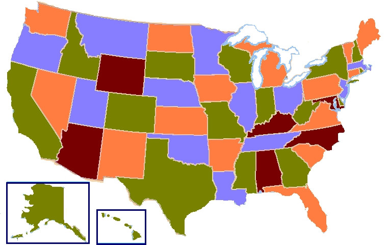
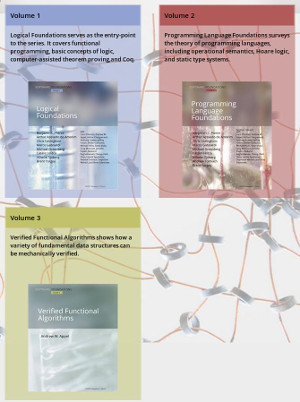

Aula 1 - Introdução à introdução de Coq
1 Introducao
1.1 Provadores Automáticos
- Entre com uma proposição, aperte um botão e veja a resposta.
- Fazem todo o trabalho da prova. Humanos não são necessários.
- São procedimentos de decisão.
- Limitados a domínios específicos.
- Fornecem um formalismo para especificar a proposição, mas não para a sua prova. Fornecem uma valoração caso falso.
1.2 Assistentes de Provas
- São provadores semi-automáticos.
- Uso com domínio menos restrito: podem falar sobre diversas lógicas, teorias e até mesmo programas.
- Podem utilizar provadores automáticos, mas ainda necessitam do humano.
- Fornecem um formalismo para representar a prova. Lembra as regras da Dedução.
1.3 Como Assistentes de provas assistem?
- O núcleo de um assistente de provas é um verificador, que verifica a consistência lógica da prova.
- A verficação humana de provas é demorada e sujeita a falhas: Último Teorema de Fermat.
- Fornecem de maneira interativa de visualizar as informações sobre o estado atual da prova.
- Ajudam a encontrar teoremas e lemas para o progresso da prova.
- Permitem implementar métodos não-deterministas para auxiliar a prova.
Assistentes de provas permitem provar coisas que não seriam realizáveis somente com papel e caneta: Four Color Theorem

1.4 Qual assistente utilizar?
- Existem diversos assistentes, cada um baseado numa teoria matemática e com as suas peculiaridades: Agda, Isabelle, HOL, Minlog, Coq…
- Iremos utilizar Coq! Mas por que?
- É o que eu sei algo;
- Existe desde 1984;
- Há vários livros;
- Suporte para ordem superior, tipos dependentes, automação e extração de código.
1.5 O que é Coq?
- Coq é um assistentes de provas (dã) desenvolvido desde 1984 pelo French Institute for Research in Computer Science and Automation (INRIA).
- Coq é fruto de sistemas de tipos: Higher order dependently typed polymorphic lambda calculus, o nomeado Calculus of Constructions (CoC).
- Inicialmente chamado de CoC, foi estendido em 1991 para suportar construções indutivas e o nome mudou para Coq. Referência a Thierry Coquand.
- Coq tem quatro linguagens:
- Gallina: linguagem de programação funcional total e com tipos dependentes.
- Tatic: linguagem para criar provas com a ajuda do assistente/verificador.
- Vernecular: linguagem de comandos. Enunciar teoremas, funções…
- LTac: criação de novas táticas e procedimentos de prova.
1.6 Programação certificada em Coq
- Coq permite não só provar teoremas da matemática, mas também provar propriedades de programas.
- Provar correturede de programas. Dijkstra screams in pleasure
- Programas verificados (ou provas) em Coq podem ser extraídos para outras linguagens como Haskell, OCaml e Scheme.
1.7 Como aprender Coq?
Vamos utilizar o Volume 1 do Software Foundations https://softwarefoundations.cis.upenn.edu/

1.8 Coq é confiável?
No que eu preciso confiar quando vejo uma prova em Coq?
- A teoria por trás de Coq: Coq 8.0 é equivalente a Zermelo-Fraenkel set theory + inaccessible cardinals.
- A implementação do núcleo do Coq: A implementação representa a teoria por trás de Coq e é pequena para evitar o risco de erros.
- O compilador de OCaml: Utiliza somente bibliotecas básicas, então é improvável que um bug no compilador quebre a lógica de Coq sem quebrar todo os outros softwares feitos em OCaml.
- Seu hardware: Se o seu hardware falhar, pode ser possível provar o Falso (illuminati confirmed). Teste em outros computadores.
- Seu sistema operacional: idem hardware.
- Seus axiomas: Coq permite você adicionar novos axiomas, os quais precisam ser consistentes com a teoria de Coq.
2 Baby's First Steps
2.1 Como utilizar o assistente de provas?
- CoqIDE = Bom lugar para começar sem perder o foco. Tem os recursos básicos.
- Emacs + ProofGeneral + Company-coq = a maneira mais eficiente de usar Coq.
2.2 Baby's First Type
- Coq não tem um conjunto de dados básicos build-in. Todos os tipos de Coq são definidos em Coq.
- Tipos são definidos com Inductive, seguido do identificador, o tipo desse tipo e a sua definição em | termo : tipo.
Inductive day : Type := | monday : day | tuesday : day | wednesday : day | thursday : day | friday : day | saturday : day | sunday : day.
2.3 Baby's First Proof
- Teoremas são enunciados com Theorem, seguido do seu identificador e a sua proposição (tipo).
- Provas são enunciadas com Proof e finalizadas com Qed.
- A tática reflexivity verifica se os termos dos dois lados da igualdade são os mesmos (mas não faz somente isso).
- A janela lateral contem o objetivo e o contexto no estado atual da prova.
Theorem fridayIsFriday : friday = friday. Proof. reflexivity. Qed.